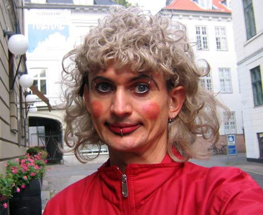

|
||
| Homoer på tværs Skal vi opnå accept ved at tilpasse os hetero-normerne, eller opnå accept ved at ændre på de normer, som gør os uacceptable? Skal vi spørge om lov til at kunne leve som de heteroseksuelle, eller skal vi insistere på, at vi er anderledes og i vores gode ret til at leve et andet liv? Det handler om queer-politik. |
||
 Performeren Dennis Agerblad i en af hans mandekjoler. ”Det er fedt, når pikken kan dingle frit under kjolen”, fortæller han. |
||
| Der sker ting og sager i homo-miljøet.
Plakater med slogans som ”Bekæmp
hate crimes – bank en hetero” og
”Bondam er hetero” hænger rundt omkring i
København. Som protest mod Priden skaber
nogle folk deres egne alternative fester i H.C.
Ørsted Parken. Det er nogel af de samme folk
som også arrangerer skamløse bøsse-sexfester
i Ungdomshuset. Og så er der endelig
Dunst: En samling af homo-miljøets mere
skæve eksistenser, som med performances,
musik og fester, skubber til grænserne for,
hvad der er acceptabelt og normalt. Hvad er
det for noget? Noget queer noget Er der en rød tråd? Ja, det er der. Det er alt sammen noget queer noget. Queer betyder egentlig ”sær”, ”afvigende” eller ”skæv”. Queers er alle dem, der ikke passer ind systemet. Bøsser, lesbiske, transseksuelle, transvestitter og sado-masochister mv. er alle queers, fordi vi lever et liv, som i bund og grund ikke passer ind i det system, den heteroseksuelle majoritet har skabt. Queers er på tværs. Queer-theory Egentlig er queer ikke en identitet. Det er snarere en teori om at være anderledes i et heteroseksuelt samfund og en politik for, hvordan vi skaber plads til at være anderledes. Kernen i queer-tankegangen er, at vi skal arbejde mod frigørelse i stedet for ligestilling med de heteroseksuelle. ”Ligestillingspolitikken har det problem, at det er de privilegerede – de heteroseksuelle – som sætter dagsordnen. Det er majoritetens målestok, vi bliver målt efter”, siger Nikolaj Lange, som er dj og performer hos Dunst samt medlem af Enhedslistens Queerudvalg. Ligestilling eller frigørelse Det er på grund af forskellen mellem ligestilling og frigørelse, at mange folk, som ønsker at føre en queer-politik, bliver nødt til at sige fra overfor en afpolitiseret Pride, der ikke tør udfordre etablissementet, og LBLs politik, som primært går ud på at sikre, vi kan leve på samme måde som heteroerne. Frigørelse er at insistere på retten til at være anderledes, hvilket er noget andet end at søge ligestilling. Ved at søge ligestilling, spørger vi blot om lov til at leve som de heteroseksuelle. Men bør målet ikke være, at vi skal kunne leve på den måde, som passer os bedst?
Normal-bøssen Problemet med ligestillingspolitikken er, at den normaliserer de homoseksuelle. Målet bliver, at vi skal leve som de heteroseksuelle. Vi skal leve ”straigt acting” i et ”ægteskabslignende forhold”. Og for at bevare anerkendelsen må vi hele tiden demonstrere, at vi skam er acceptable nok. Man gifter sig som et plaster på såret overfor mor og far, og når hetero-vennerne er inviteret med til fest, undlader man at invitere de mest afvigende homo-venner med - dem, man helst ikke vil sættes i bås med. Disney-gay Ligestilling gør det mondænt at være bøsse, og mange har det også rigtig godt med deres bøsse-identitet. Den er så at sige blevet en pakke-identitet, man kan tage på sig med tilhørende musiksmag, tøjstil og forbrugsmønstre. Det er fedt at være del af regnbuefamilien. Hvad McDonald’s har gjort for mad og Disney for underholdning, har ”gay-identiteten” gjort for den homoseksuelle kultur. Den standardiserede homo-kultur har gjort det nemt at identificere de ”rigtige” og de ”forkerte” bøsser. Det er vigtigt, for man får identitet ved at finde nogen, man ligner og nogen, man adskiller sig fra. For at blive opfattet som normal og dermed acceptabel, må man selv være med til at udgrænse og udpege de ”unormale”. Normerne skal angribes Spørgsmålet er derfor: Skal vi opnå accept ved at tilpasse os normerne, eller opnå accept ved at ændre på de normer, som gør os uacceptable? ”Til forskel fra ligestillingspolitikken, så går queer-politik ikke ud på at kæmpe for individuelle gruppers rettigheder, men at angribe selve de normer, som virker begrænsende på nogle folks livsførelse”, forklarer Nikolaj Lange. Det, der skal bekæmpes, er altså det system, som belønner en bestemt form for lyst og livsform, nemlig de heteroseksuelle normer. Ikke at kæmpe for individuelle gruppers rettigheder, er helt centralt for queer-theory, da der altid er nogen, som falder udenfor gruppen, for eksempel biseksuelle og transseksuelle. Derfor vil queer-theory og dens politik også gøre op med selve opdelingen heteroseksuel-homoseksuel. Dels fordi verden ikke er så enkel, og dels fordi, at det er selve opdelingen af folk efter seksuel observans, som muliggør de heteroseksuelles dominans over de homoseksuelle. Det kræver nok en forklaring. Bøssen blev opfundet i 1897 At inddele folk i heteroseksuelle og homoseksuelle var først noget man begyndte at gøre i slutningen af 1800-tallet. Begrebet ”homoseksuel” optrådte for første gang på engelsk i 1897, mens begrebet ”heteroseksuel” optrådte for første gang nogle år senere. Ved at opfinde kategorien ”homoseksuel” kunne man kategorisere og marginalisere en gruppe af afvigere. Man fik så at sige en kasse at putte dem i. Problemet er, at der med opdelingen af folk i heteroseksuelle og homoseksuelle også blev indført et hierarki. Heteroerne var mere rigtige og naturlige end homoerne. For at bryde hierarkiet, må selve opdelingen heteroseksuel- homoseksuel derfor angribes, da det er den som gør os til en minoritet, som det er ok at forskelsbehandle. Væk med homoen Ifølge queer-tankegangen skal vi altså helt væk fra at tænke hetero-kontra-homo. Politik og rettigheder skal først og fremmest angå mennesker, uanset hvordan de lever. ”Queer-politik i praksis betyder, at vi i stedet for det borgerlige ægteskab skal have en generel kontrakt, som kan indgås mellem mennesker uanset køn, seksualitet og antal. I forhold til transseksuelle er et queer-politisk mål, at vi får et personnummersystem, som ikke sætter folk i bås som enten mand eller kvinde”, fortæller Nikolaj Lange. Ved at insistere på retten til at være anderledes og skabe en mangfoldig kultur, kan vi skabe et samfund, hvor seksualitet ikke betyder noget for dine rettigheder og muligheder som borger. I bund og grund er årsagen til at homoseksuelle er ofre for vold, chikane og forskelsbehandling mangel på accept af seksuel diversitet. Så skarpt kan vores situation stilles op. Men, homofobien forsvinder først, når det heteroseksuelle flertal lærer at leve med de, som er anderledes. Det kræver ikke, at vi tilpasser os, men, at der faktisk er nogle, som viser, at man kan leve og være anderledes. Det gør for eksempel en person som Dennis Agerblad. Du kan selv bestemme ”Jeg vil gerne opløse kønnet og vise, at man selv kan bestemme, hvad man vil være”, fortæller Dennis Agerblad, der som performer er en del af Dunst. ”Jeg vil skabe nogle sjove, underlige eller mærkelige billeder, som bryder med de traditionelle opfattelser af køn og identitet, og af hvad der er pænt og grimt. Jeg vil vende op og ned på virkeligheden. Jeg er ikke kvinde, hvorfor jeg heller ikke optræder som Frøken et eller andet. Jeg er Dennis Agerblad, som har noget tøj på, mænd normalt ikke har på”, understreger han. At kalde sig selv for queer er at vedkende sig og insistere på, at man er afvigende. Og mene, at man er i sin gode ret til at afvige fra de heteroseksuelle normer. Virkelig ligestilling opnår vi først den dag, hvor samfundet har accepteret de anderledes køn og seksualiteter i sådan en grad, at det slet ikke er noget, man tænker på længere. TEKST: HENRIK KRISTENSEN FOTO: HENRIK KRISTENSEN M.FL. www.out-and-about.dk |
||
|
Print denne side |